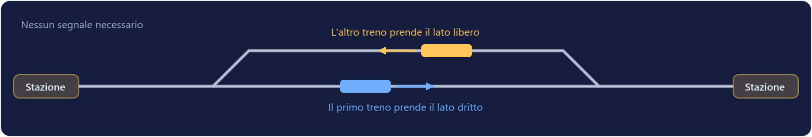

Binari di incrocio
Più treni su una linea, e il doppio binario.
Un binario di incrocio permette a due treni di condividere una linea a binario unico: si incontrano lì e si incrociano.


- Costruisci la linea principale tra le tue due stazioni.
- A metà strada, posa un secondo binario che esce dalla linea principale e poi vi si ricongiunge.
- Fai il binario di incrocio lungo almeno quanto i tuoi treni: una locomotiva occupa poco più di mezza casella e ogni vagone mezza casella.
Tutto qui: un binario di incrocio non ha bisogno di segnali.
Come si incrociano i treni
Un treno entra in uno scambio solo quando lo scambio è libero, e lo è anche il binario da cui ne esce, fino al prossimo scambio o segnale. Un treno che trova occupato il binario unico davanti aspetta sul suo lato del binario di incrocio, e il treno che arriva in senso opposto prende il lato libero.
I segnali a senso unico funzionano ancora su un binario di incrocio: tengono i treni di ogni senso sul proprio lato. Vedi Segnali.
Doppio binario
Per una linea trafficata, posa due binari affiancati e rendi tutti i segnali a senso unico, rivolti nel senso di marcia dei treni. Con un segnale ogni poche caselle i treni possono seguirsi da vicino.
Stalli
Un treno che ha aspettato circa un mese a un segnale o a uno scambio si stufa: fa inversione e va verso un'altra delle sue fermate, se il binario dietro ci porta. Altrimenti riparte comunque, e si scontra con il treno che aspettava se è ancora in mezzo. Prendi un'attesa lunga come un avviso che la linea ha bisogno di un altro binario di incrocio, o di uno più lungo.